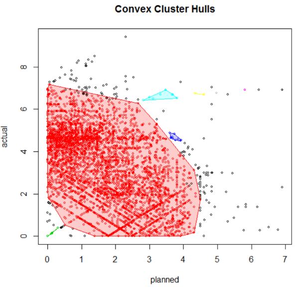

Using Advanced Analytics to leverage data
Case:
An International Shipping company had accumulated years of booking and operational data. The data was used in they monthly report and for their Year Over Year (YoY) gain but ignored thereafter.
Management saw value in this data and called upon a set of data scientists to find if there were some ‘value´ in the data.

Process:
The process in data mining is to join business users with data scientists. Together, they create a business and data understanding. This was done though small workshops where data and business ideas were explored. The 2 teams helped each other understanding the possibilities. A set of ideas were retained: the early identification of customer churn and volume prediction.
The data scientist and IT experts collected the right information. Business users validated the assembled data. The data scientist and IT specialists started to build a set of models.
The models were run, evaluated by the business and refined. Once the data was collected, the cycle of refinement-evaluation took 2 weeks. Total project time was short, about 4 months.
Tools:
An important component, the commodities shipped were classified using the Simple Bayesian Classification algorithm. The clustering analysis used the “Density-based Spatial Clustering of Application with Noise” (DBSCAN). Bespoke time series and seasonality analysis were developed for the problem using customer input and refinements. The R language was used to model the algorithms.
Result:
The historical data could be used to detect churning ahead of time. On selected market, it could also be used for prediction of volume. The findings of the clustering analysis surprised the business as some were counter intuitive. The counter intuitive findings were studied in depth and were, after several rounds of validations, correct.
Data Mining using Big Data Technologies Big data was designed for Data Mining. Despite the popularity of big-data technologies (Hadoop, Map/Reduce, Pig Latin, Hive, U-SQL, etc.) for traditional data warehousing, the number of algorithms, readily available has increased and the integration of the R language in this technology makes data mining possible at reasonable cost.
Out of the 1000’s of algorithms available to data scientist, some have proven themselves across time. Ange Analytics have used several of the ‘long standing’ algorithms in the areas of Decision Tree, Associative Rules, Support Vectors, Clustering, Bayesian Network, Rule Based machine learning and Optimisation.
Ange has also developed several optimisation tools using linear and integer programming for the shipping, air and trading industries.